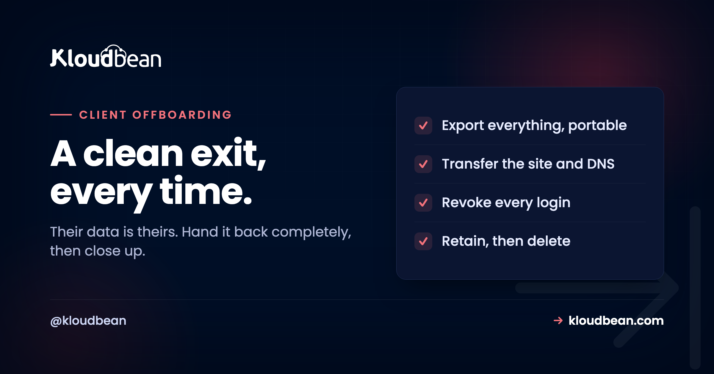

Agency Client Offboarding: The Clean Exit Runbook

Offboarding is the part of agency work nobody enjoys and everybody remembers. A client is leaving, maybe on good terms and maybe not, and how you hand over their site decides whether they recommend you for years or warn people away. The temptation under a soured relationship is to be slow, vague, or to sit on their data until a final invoice clears. Resist all of it. Their site and data are theirs, a clean exit costs you almost nothing, and the reference you earn is worth more than the friction you'd save. This is the runbook for doing it right; the principle behind it is in the agency playbook's offboarding phase.
Five steps, done promptly and without drama. Export everything in portable form (files, database, media). Transfer the site to the client or their new agency, including the DNS cutover away from you. Revoke access deliberately, disabling every login tied to the engagement rather than leaving stale accounts live. Close billing: send the final invoice and stop the recurring charge. Then keep a backup for an agreed retention window and actually delete it afterwards. The one rule that governs all of it: the client's data is theirs, so never hold it hostage to force a payment. Separate the invoice from the handover.
The principle: their data is theirs
Start here, because it settles every hard call that follows. The site, the database, the uploads, the content, all of it belongs to the client, regardless of how the relationship ended or what is owed. Your leverage for an unpaid invoice is an invoice and, if it comes to it, the normal commercial process, never withholding someone's business data.
This is not only ethics, it is self-interest. A client who leaves and gets a clean, prompt handover remembers you as professional even though they left. A client who has to fight to get their own data back tells everyone. Offboarding is the cheapest reputation insurance an agency can buy, and the fact that you own your data on a portable platform rather than a locked one is what makes it cheap.
Step 1: Export everything, in portable form
Give them a complete, standard copy of the site, the kind another host or agency can actually use, not a proprietary bundle.
# The database, as a portable dump
mysqldump -u dbuser -p clientdb > clientdb.sql # MySQL / MariaDB
pg_dump -U dbuser -Fc clientdb > clientdb.dump # PostgreSQL
# The files and uploads, as a single archive
tar -czf clientsite-files.tar.gz /path/to/site
# Hand over a checksum so they can verify the transfer arrived intact
shasum -a 256 clientsite-files.tar.gz clientdb.sqlPackage the database dump and the file archive together, and include the checksum so the recipient can confirm nothing was truncated in transfer. If they are moving to another managed host, this is exactly the input a migration needs, and the same free migration assistance that brings sites in also means a clean, standard export going out, because a platform where you own your data is one you can leave as easily as you joined. The mechanics either direction are in migrating hosting without downtime and the archive detail in creating and extracting tar.gz archives.
Step 2: Transfer the site and the DNS
Handover has two halves: give them the site, and point the world at wherever it now lives.
- To the client directly: deliver the export and, if they are keeping the site with you but taking over the account, transfer ownership of their environment rather than making them rebuild.
- To a new agency or host: provide the export and coordinate the DNS cutover so there is no downtime in the middle. Their new host stands the site up, verifies it, and only then does DNS move.
- The DNS itself: if you hold the domain or DNS, hand back control or update the records to point at the new home. A launch is a DNS change, and so is a departure.
Do not cut anything over until the destination is confirmed working. The client's site should never be down during a handover, the same discipline as a normal migration: build and verify at the destination first, move DNS last.
Step 3: Revoke access, deliberately
This is the step most often forgotten, and the one with the longest tail if you skip it. When an engagement ends, every login tied to it should stop working: the client's own account if they have moved off entirely, any contractor who was scoped to their site, and any shared credential that touched it.
If you set access up as scoped subusers during onboarding, this is the revocation drill from the subusers and UAC guide: disable the identities and every permission they held goes dark at once. If you did not, offboarding is where you learn why that mattered, because now you are resetting shared passwords and hoping you caught them all. Make a list of every login connected to the client and confirm each is gone.
Step 4: Close billing cleanly
Two things happen here, and keeping them separate from the handover is the whole point.
Send the final invoice for work done and hosting up to the departure date, on your normal terms. And stop the recurring charge, so you are not billing someone who has left, which is a refund and an awkward email waiting to happen, nor quietly hosting them for free because you forgot to cancel. Both are common, and both look unprofessional in opposite directions.
Crucially, the invoice runs on its own track. The handover in steps 1 to 3 does not wait for it to clear. You have given them their data and their site because it is theirs; you are owed money because of a contract; those are two separate conversations, and conflating them is how a routine departure becomes a dispute.
Step 5: Retention, then actually delete
You are not done when they leave. You are done when their data is gone from your systems on a schedule you decided in advance.
Keep a backup for a sensible, agreed retention window, long enough that if the migration to their new home turns out to be missing something, you can help. Then delete it. Holding a former client's database and files indefinitely is not a courtesy, it is an unmanaged liability: data you are responsible for, that you no longer have a reason to hold, sitting where a future breach could expose it. Decide the window, tell the client what it is, and honour the deletion.
| Timing | What happens to their data |
|---|---|
| At departure | Full export handed over; site transferred; access revoked |
| Retention window | One backup retained, in case the new home is missing something |
| After the window | Backup deleted; you confirm to the client it is gone |
The offboarding email
Like onboarding, the client's experience of the exit is mostly one message. Make it gracious and concrete.
Subject: [Site] handover, everything you need
Hi [name],
As agreed, here's everything for [site]:
- Full export: files, database, and media (checksums included).
- The site has been transferred to [client / new host] and is live there.
- We've closed our access on our side as of [date].
We'll keep one backup until [retention date] in case anything's needed
during your move, then delete it. Your final invoice is attached,
separately from all of the above.
It's been a pleasure working with you. If we can help with the transition,
just ask.
[Your name]That email costs nothing and does two jobs: it proves the handover was complete, and it leaves the door open. Plenty of clients who leave come back, and the ones who don't still refer people.
The mistakes that turn a departure into a story
Holding data hostage for payment. The big one. It rarely produces the payment any faster, it frequently produces a bad review or worse, and it undoes years of goodwill in a week. Chase the invoice through proper channels; hand over the data regardless.
Forgetting to revoke access. The quiet one. Stale logins to a client you no longer host are a security incident waiting to be discovered. Revoke on the end date.
Forgetting to stop billing. Either you keep charging a departed client, or you host them free for months. Both look careless. Cancel the recurring charge as a step, not an afterthought.
Keeping their data forever. "Just in case" becomes a liability you are still responsible for years later. Retain for a window, then delete.
Where hosting fits, honestly
Clean offboarding is far easier on a platform where the client's data was always portable and access was always scoped. Because you own your files and databases in standard formats, the export in step 1 is a normal dump and archive, not a fight with a proprietary system. Because access was scoped subusers, revocation in step 3 is one action per identity. Automatic backups give you the retained copy for the window, and the same free migration assistance that helps sites arrive means a clean, standard handover when one leaves. On Kloudbean all of that runs from one account across seven clouds, which is what keeps a departure to a runbook rather than an ordeal.
The honest boundary: the platform makes export, transfer, and revocation straightforward, but the decision to offboard cleanly and promptly is yours. A tool cannot make you hand back data graciously; it can only make sure that when you choose to, it takes minutes.
Related reading
The other bookend is the agency client onboarding checklist, and the strategy around both is the hosting for agencies playbook. Revocation is the subusers and UAC guide. The transfer mechanics are migrating hosting without downtime, and the export detail is in creating and extracting archives and the backups guide. On the money side, client billing and markup.
Own the data, so leaving is as easy as joining.
Portable exports, scoped access you can revoke in one action, automatic backups for the retention window, and free migration assistance in either direction, from one account across seven clouds. Start at kloudbean.com or see pricing.
Portable data · One-action revocation · Automatic backups · Free migration · One account
FAQ
How do I offboard a client cleanly?
Export everything in portable form, transfer the site and DNS to the client or their new host, revoke every login tied to the engagement, send the final invoice and stop the recurring charge, then keep one backup for an agreed retention window before deleting it. Do the handover promptly and keep it separate from the invoice, because the client's data is theirs regardless of what is owed.
Can I withhold a client's data until they pay?
You should not. The site and data are the client's property, and withholding them rarely speeds up payment while reliably producing bad reviews and sometimes legal trouble. Pursue an unpaid invoice through your normal commercial process, and hand over the data on its own track. Separating the two is what keeps a routine departure from becoming a dispute.
What do I need to export when a client leaves?
A portable database dump (mysqldump or pg_dump), an archive of the files and uploads, and a checksum so the recipient can verify the transfer arrived intact. Package it in standard formats another host or agency can use directly, not a proprietary bundle. If they are moving to another managed host, this is exactly what a migration needs as input.
How do I revoke a departing client's access?
Disable every login tied to the engagement: the client's own account if they have moved off, any contractor scoped to their site, and any shared credential that touched it. If access was set up as scoped subusers, this is one action per identity. If it was a shared password, you will be resetting it and hoping you caught every place it was used, which is why scoped access matters before you ever need to revoke it.
How long should I keep a former client's data?
Keep one backup for a sensible, agreed retention window, long enough to help if their move turns up something missing, then delete it and confirm to the client that it is gone. Holding a former client's data indefinitely is a liability rather than a courtesy, because you remain responsible for data you no longer have a reason to store.
Should I transfer the domain and DNS too?
Yes, if you hold them. Hand back control of the domain or update the DNS records to point at the site's new home, and do the cutover only once the destination is confirmed working so there is no downtime. A departure is a DNS change just as a launch is, and the client should never see their site go dark during the handover.
How is this different from the agency playbook?
The playbook covers the principle and where offboarding sits in the wider agency operation. This page is the operational runbook: the export commands, the transfer and DNS steps, the revocation drill, the billing close, the retention-then-delete schedule, and an offboarding email you can adapt. Read the playbook for the why, use this to execute.
What is the most common offboarding mistake?
Two compete. Holding data hostage to force a payment, which damages your reputation far more than it helps cash flow, and forgetting to revoke access, which leaves former clients or contractors with live logins for months. Both are avoided by treating offboarding as a deliberate runbook with a finish line, the same way you treat onboarding.